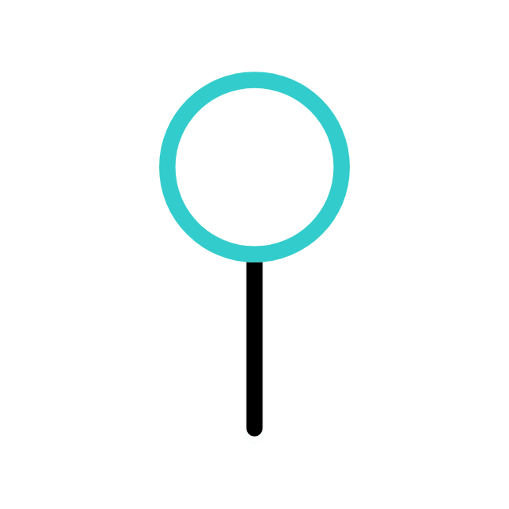
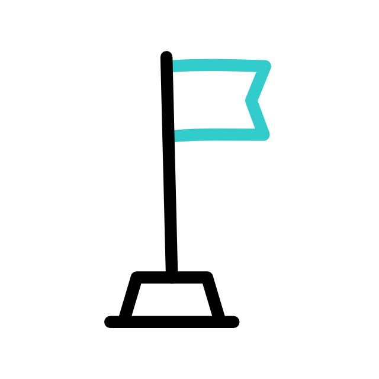

<header class="container__main">
  <h1>Saper</h1>
  <div id="menu" *ngIf="menu === 1">
    <section class="container__instructions">
      <h2>Instrukcje</h2>
      <ol>
        <li>Aby wygrać musisz odsłonić pola mapy bez min</li>
        <li>Odsłonięcie pola z miną kończy grę</li>
        <li>
          Cyfra na odsłoniętym polu informuje o ilości min przylegających do
          pola
        </li>
      </ol>
    </section>
    <section class="container__options">
      <h2>Wybierz mape</h2>
      <div class="btn__close" (click)="toggleMenu()">
        <app-close-btn></app-close-btn>
      </div>
      <div class="container__inputBoxes">
        <div class="selected">
          <input
            type="radio"
            id="smallMap"
            name="mapSize"
            value="10"
            checked
            (click)="changeMap($event)" />
          <label for="smallMap">S</label>
        </div>
        <div>
          <input
            type="radio"
            id="mediumMap"
            name="mapSize"
            value="15"
            (click)="changeMap($event)" />
          <label for="mediumMap">M</label>
        </div>
        <div>
          <input
            type="radio"
            id="bigMap"
            name="mapSize"
            value="30"
            (click)="changeMap($event)" />
          <label for="bigMap">L</label>
        </div>
      </div>
      <button (click)="handleStartBtn()">Start</button>
    </section>
    <section class="container__controls">
      <h2>Sterowanie</h2>
      <ul>
        <li>Lewy przycisk myszy odsłania pole</li>
        <li>
          Wciśnięcie scrolla na myszy oznacza pole jako 'niepewne'
          
        </li>
        <li>
          Prawy przycisk myszy oznacza pole jako zaminowane
          
        </li>
      </ul>
    </section>
  </div>
  <div
    class="menu__btn"
    pTooltip="Menu"
    tooltipPosition="left"
    (click)="toggleMenu()"></div>
</header>
